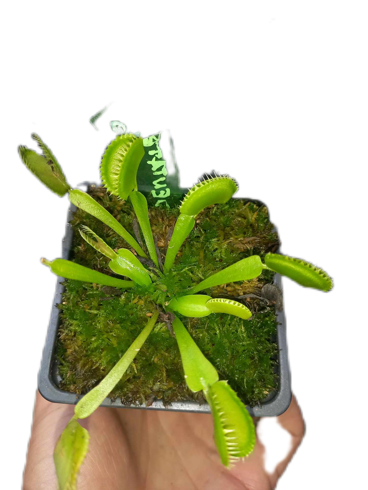

Aqui podran encontrar una lista de las diferentes variedades de Plantas carnivoras
¿Falta alguna ? Dejanos tu msj y ayudanos a perfeccionar la lista
Informate sobre los cuidados basicos de cada planta carnivora
Esta es una guia basica con cuidados generales para cada especie
Proximamente estara disponible una guia detallada para cada variedad
El genero Byblis comprende 12 especies
Byblis
Brocchinia
-
Byblis Liniflora
Solo Existe una Especie de Venus Atrapamoscas
A su vez se crearon diferentes CULTIVARES con apariencia unica
Mas sobre cultivares AQUI
Dionaea Tipica
Cultivares de Dionaea
- B52 
- G16
- Bimbo
- Sawtooth
Solo Existe una Especie de Venus Atrapamoscas
Drosera
Solo Existe una Especie de Venus Atrapamoscas
Nepenthes
Solo Existe una Especie de Venus Atrapamoscas
Pinguicula
Solo Existe una Especie de Venus Atrapamoscas
Sarracenia
Solo Existe una Especie de Venus Atrapamoscas
Stylidium
Solo Existe una Especie de Venus Atrapamoscas